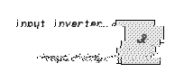
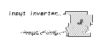

Modification des entrées d'un logigramme. 
Dans la liste de gauche, on trouve les différentes fonctions, que l'on peut placer à l'aide de la sourie sur le plan de travail.
Pour câbler une sortie (côté droit d'un élément), cliquer sur la sortie et tiré la connexion jusqu'à l'entrée désirer (côté gauche d'un élément).
Sur une connexion existante, il suffis de faire "shift et clic" pour connecter un autre fil.
Symbole et connexion peuvent être activé par un clic et effacé par la touche de suppression.
Pour quelque composant (par exemple les horloges, les monostables, les afficheurs, les étiquettes de texte), on peut modifier quelques réglages, en activant le menu contextuel par un clic droit.
Pour quelques logigrammes (AND, OR, XOR, etc.), On peut modifier le nombre des entrées à l'aide de la boîte de choix. (Sous la liste des composants).
Les Composant se comportent alors, comme s'ils seraient relié de cette façon :
Modification des entrées d'un logigramme.

Pour inverser une entrée, il suffit de sélectionner l'option "entrée l'inversée" dans le menu de gauche et de sélectionner l'entrée que l'on veut inverser. Par le même principe, on peut mettre une entrée au niveau "haut" ou "bas".
Pour remettre une entrée normale, il suffit de choisir l'option "entrée normale" et de sélectionner l'entrée que l'on désir.
Un module est un ensemble de composant relier entre eux pour réaliser une fonction précise, que l'on peut utiliser comme logigramme dans un autre schéma.
Pour créer un module, il faut d'abord choir la fonction "crée un module" du menu "module". Dans la fenêtre de dialogue qui s'ouvre on peut donner les caractéristiques du module que l'on veut crée.
Le nom du module est aussi le nom du fichier correspondant au module. L'étiquette du module correspond à la description du logigramme correspondant.
Après la validation des données, il se crée automatiquement deux portes d'entré et de sortie. Ces portes correspondent aux entrées et sorties du module crée.
Le câblage interne du module doit être raccordé ont ces portes logiques.
Pour tester le module on peut rajouter des boutons en entrer et des led en sorties.
Lors de l'enregistrement le module serra enregistré sous son nom dans le répertoire module. Après la sauvegarde, le module apparaît dans la liste des portes disponibles et peut être utilisé dans un nouveau schéma...
Par exemple vous pouvez ouvrir le module "FullAdder.mod" du répertoire "modules".
Ce module et utilisé dans le schéma "5 Bit Adder.lsim" pour l'adition de deux digits sur cinq bits.